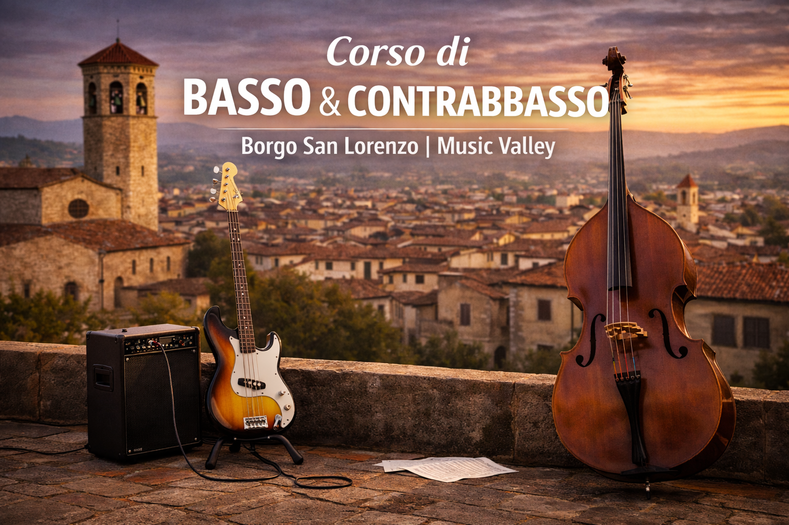

Corso di Basso e Contrabbasso
Un percorso completo tra basso elettrico e contrabbasso

Il corso di Basso e Contrabbasso di Music Valley è pensato per chi desidera costruire una solida base ritmica e armonica, sviluppando consapevolezza musicale, tecnica strumentale e capacità di suonare in contesti individuali e d’insieme.
Basso e contrabbasso rappresentano il fondamento su cui si costruisce il linguaggio musicale di ogni ensemble. Il corso accompagna l’allievo in un percorso progressivo, dal primo approccio allo strumento fino allo sviluppo di competenze avanzate, rispettando inclinazioni e obiettivi personali. Lo studio comprende tecnica strumentale, lettura, intonazione, controllo del suono e sviluppo del timing, con particolare attenzione alla postura, al movimento e alla propriocezione motoria, elementi fondamentali per suonare con naturalezza, efficacia e continuità nel tempo.
Linguaggio musicale e musica d’insieme
Il corso attraversa i principali linguaggi musicali – classico, jazz, pop, rock e musica contemporanea – fornendo strumenti concreti per affrontare situazioni musicali diverse, dalla band al contesto orchestrale. Grande importanza è data all’ascolto, alla relazione con gli altri strumenti e allo sviluppo della funzione ritmica e armonica all’interno del gruppo, anche in collegamento con i percorsi di musica d’insieme della scuola.
Metodo di studio e crescita personale
Oltre agli aspetti tecnici e musicali, il corso pone attenzione alla psicologia dello studio, alla motivazione e allo sviluppo di un mindset efficace. L’obiettivo è rendere l’allievo autonomo, consapevole e capace di organizzare il proprio percorso di studio nel tempo. Il corso è adatto a bambini, ragazzi e adulti, sia a chi si avvicina per la prima volta allo strumento sia a chi desidera perfezionarsi o prepararsi per esami, audizioni e concorsi.
I docenti del corso
Il corso di Basso e Contrabbasso è tenuto da docenti con una solida esperienza didattica e musicale:
- Lorenzo Consigli – Basso elettrico e musica moderna
- Leonardo Baggiani – Contrabbasso e fondamenti di linguaggio musicale
A chi è rivolto il corso
Il corso di basso e contrabbasso è aperto a bambini, ragazzi e adulti, sia principianti che studenti con esperienza. I percorsi sono modulati in base all’età, al livello e agli obiettivi personali di ciascun allievo.